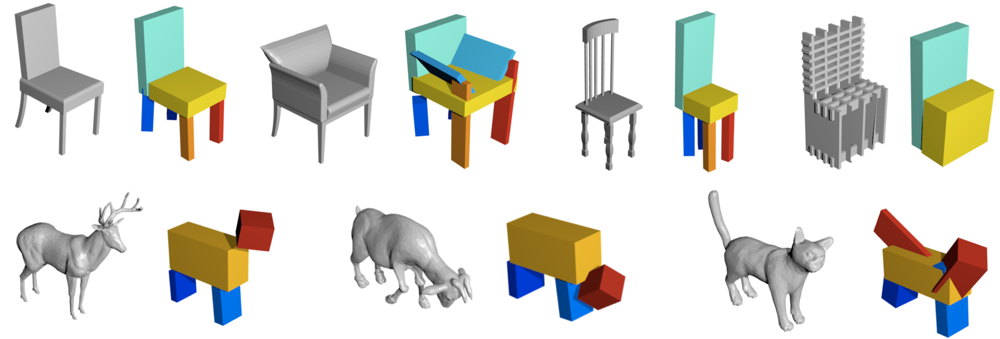
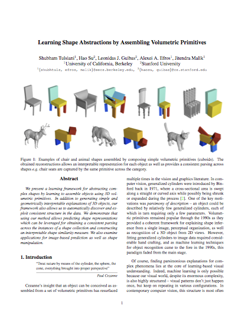
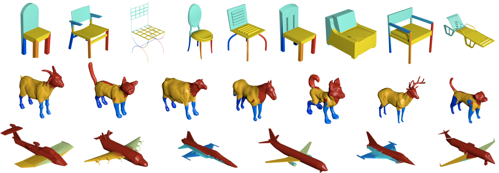
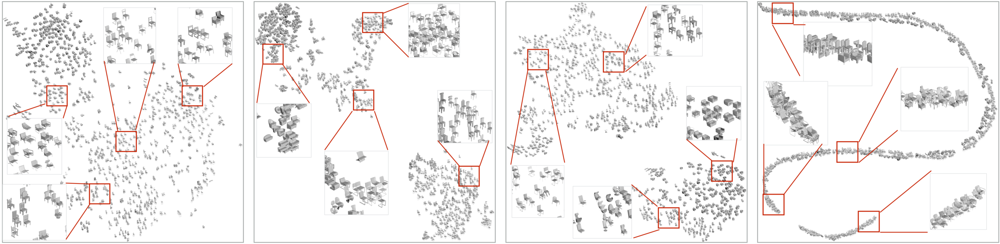

Learning Shape Abstractions
by Assembling Volumetric Primitives

|
Examples of chair and animal shapes assembled by composing simple volumetric primitives (cuboids). The obtained reconstructions allow an interpretable representation for each object as well as provides a consistent parsing across shapes e.g. chair seats are captured by the same primitive across the category.
|
We present a learning framework for abstracting complex shapes by learning to assemble objects using 3D volumetric primitives. In addition to generating simple and geometrically interpretable explanations of 3D objects, our framework also allows us to automatically discover and exploit consistent structure in the data. We demonstrate that using our method allows predicting shape representations which can be leveraged for obtaining a consistent parsing across the instances of a shape collection and constructing an interpretable shape similarity measure. We also examine applications for image-based prediction as well as shape manipulation.
Try our code
Paper
|  |
Tulsiani, Su, Guibas, Efros, Malik.
Learning Shape Abstractions by Assembling Volumetric Primitives.
In CVPR, 2017.
(hosted on arXiv)
|
Application : Unsupervised Parsing and Correspondence

|
Projection of the predicted primitives onto the original shape. We assign each point in the original mesh to the primitive with lowest distance field. We visualize the parsing by coloring each point according to the assigned primitive. We see that similar parts e.g. aeroplane wings, chair seat, etc. are consistently colored.
|
Application : Interpretable Shape Similarity

|
Embeddings computed using various distance measures - a) Voxel IoU based distance b) Ours (all primitives) c) Ours (chair back, seat primitives) d) Ours (chair back orientation). While the IoU based embedding conflates chairs different fine level structure (e.g. with/without handles), our embedding using all primitives encodes them separately. Additionally, unlike common shape representations, our inferred abstractions give us control over similarity measures – we can choose to consider only specific primitives if required e.g. chair back and seat which, as expected, results in ignoring existence of chair handles. We can also focus on specific properties e.g. chair back orientation and observe a 1D manifold emerge in this scenario.
|
Acknowledgements
We thank Saurabh Gupta and David Fouhey for insightful discussions. This work was supported in part by Intel/NSF Visual and Experiential Computing award IIS-1539099, NSF Award IIS-1212798, and the Berkeley Fellowship to ST. We gratefully acknowledge NVIDIA corporation for the donation of Tesla GPUs used for this research. This webpage template was borrowed from some coloful folks.
|
{kind=link}
{kind=link}
{kind=link}